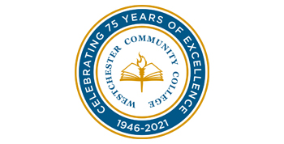

In September 2019, I started attending State University of New York (SUNY) Westchester Community College, were I attained an Associate of Applied Science in Computer Information Systems in May 2021.
During this time, I passed integral courses, including, but not limited to: System Analysis and Design, Database Mangement Systems, Business Communications, and Principles of Information Security.

In August 2021, I transferred to SUNY College at Buffalo, where I am currently pursuing my Bachelor of Science. Currently, one course I am taking, Programming for the Internet Environment, is teaching me to develop this website.